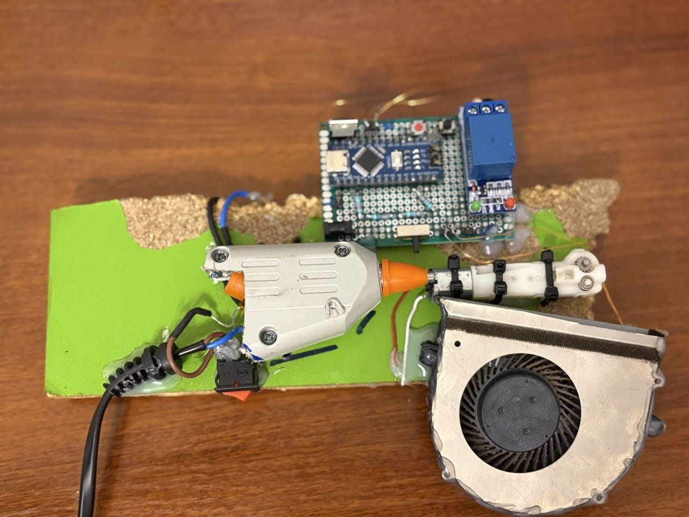
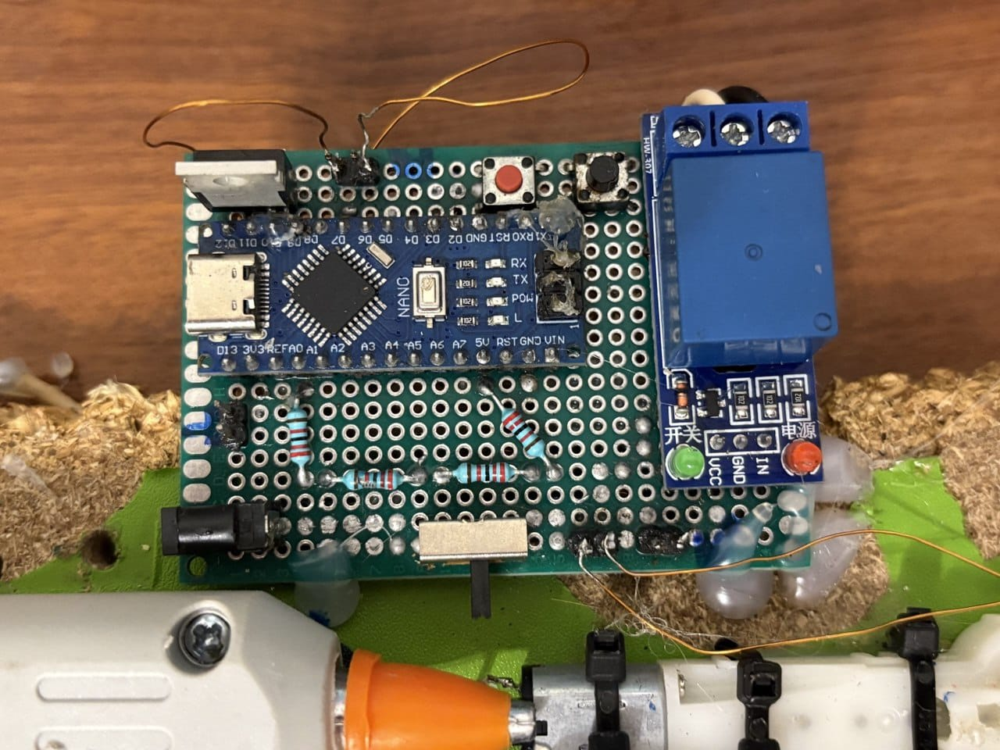
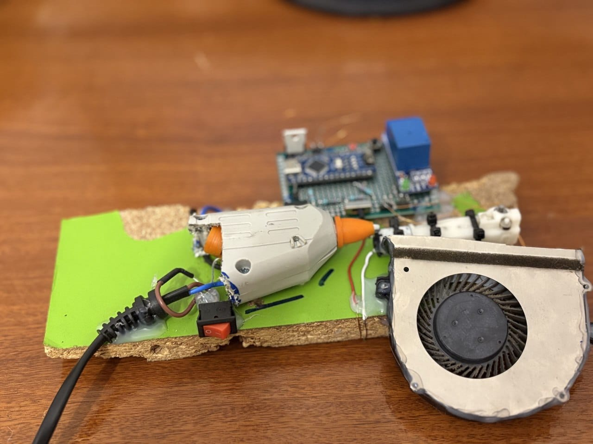
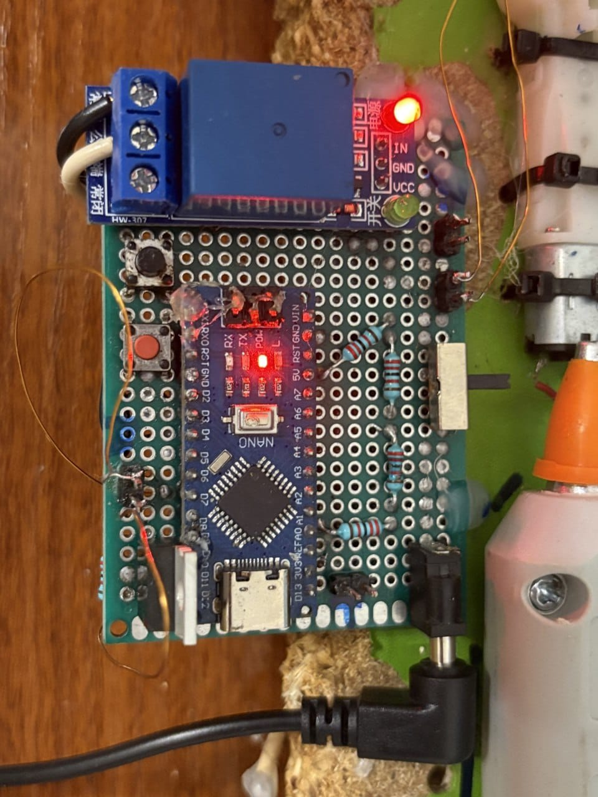
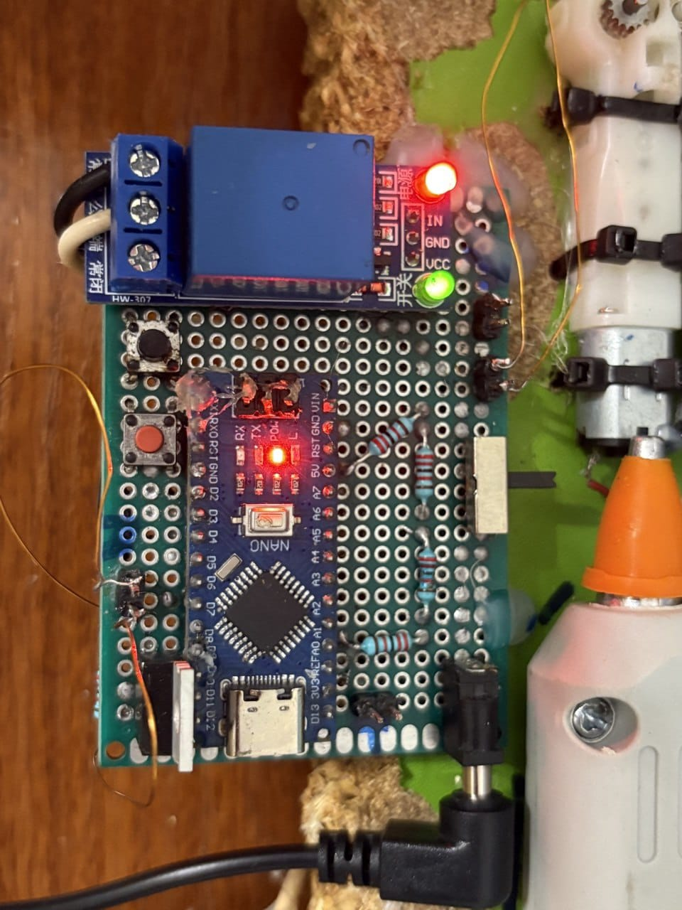

✓ Плюсы
- Прототип уже плавит PET-пластик.
- Нагрев отключается реле после 215 °C.
- Электроника собрана и работает.
Прототип, который плавит PET-пластик и развивается в сторону протяжки филамента.


Прототип собран на Arduino Nano, реле, нагревателе, двигателе и вентиляторе. Плата спаяна на макетной плате: часть соединений выполнена проводами, часть — медной проволокой. Сейчас устройство плавит PET-пластик.
Прототип переработки PET
Arduino Nano
В разработке
2026
Реле после 215 °C
Ищется замена термистору



